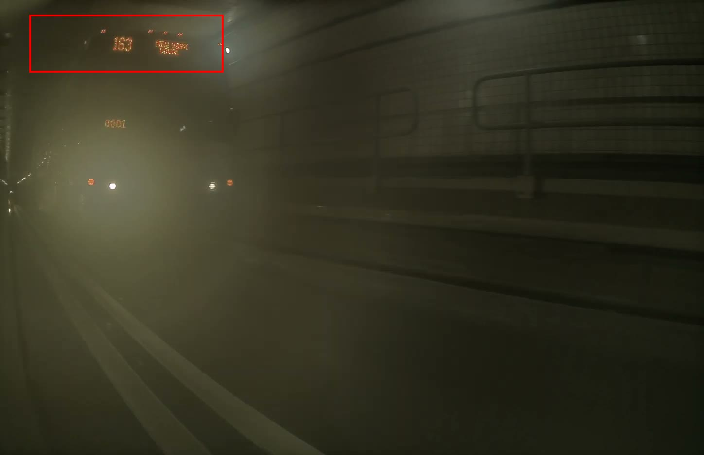
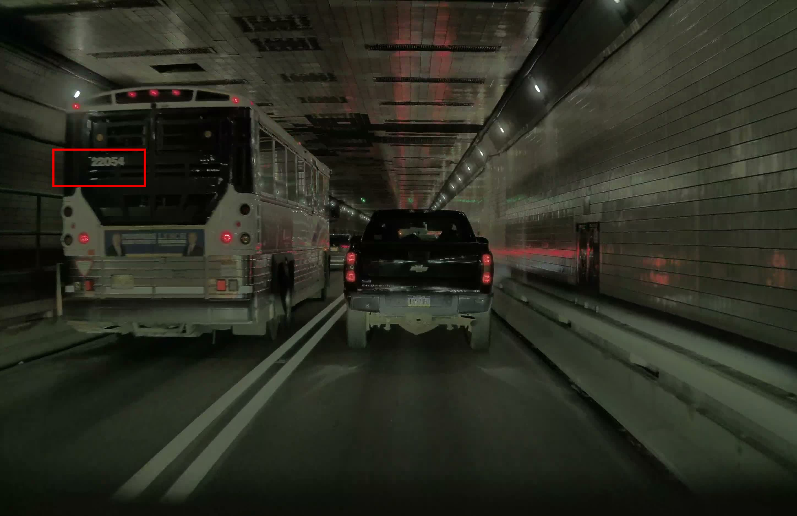
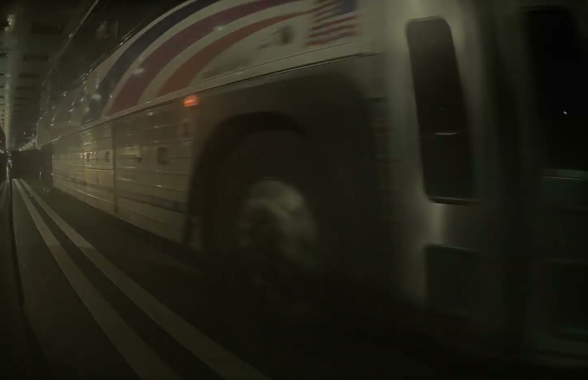
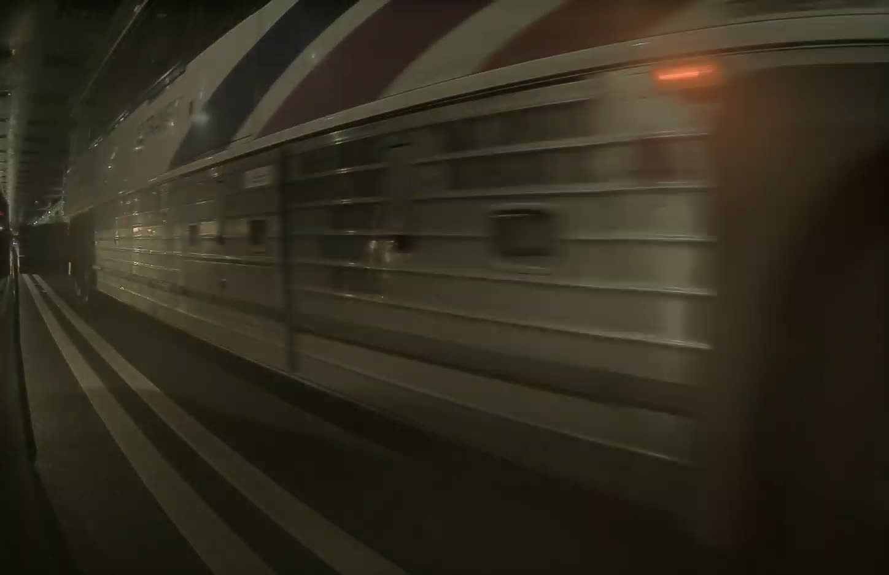
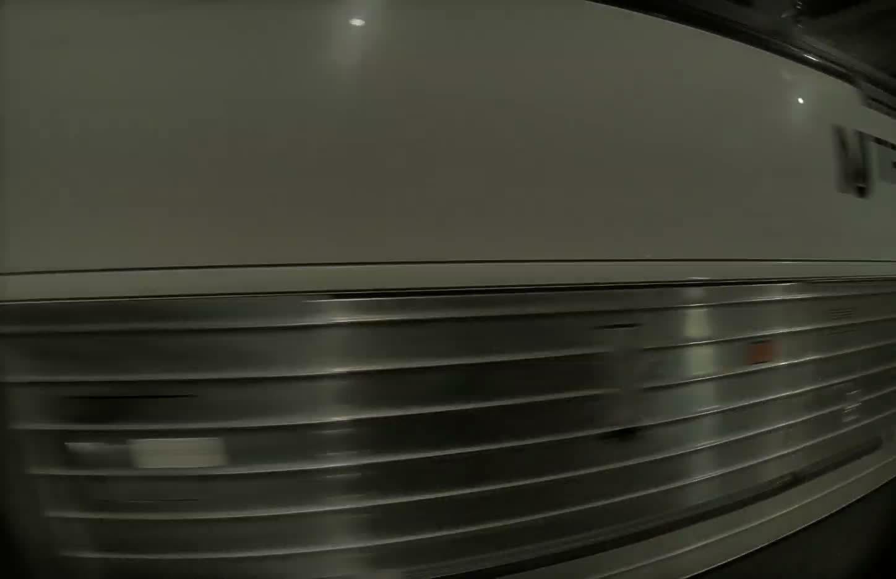
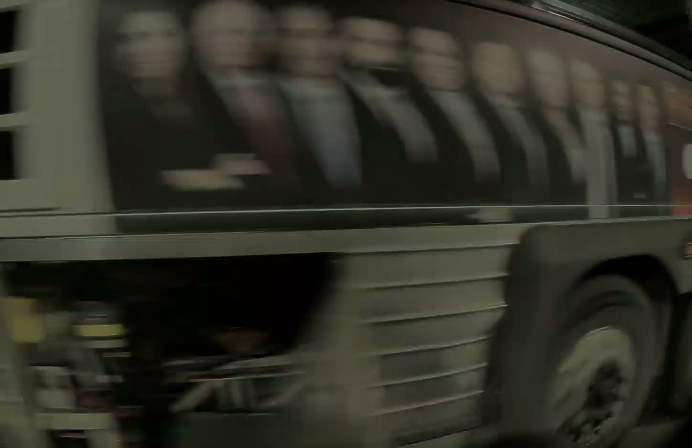
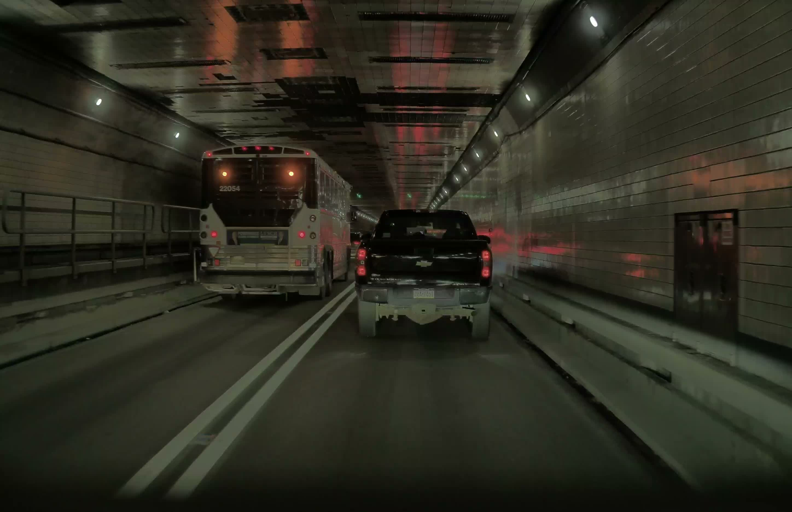
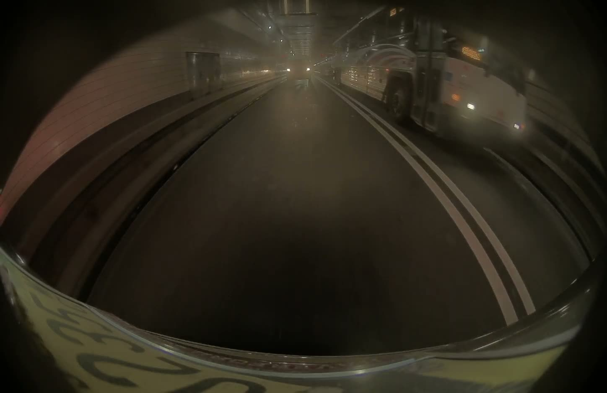
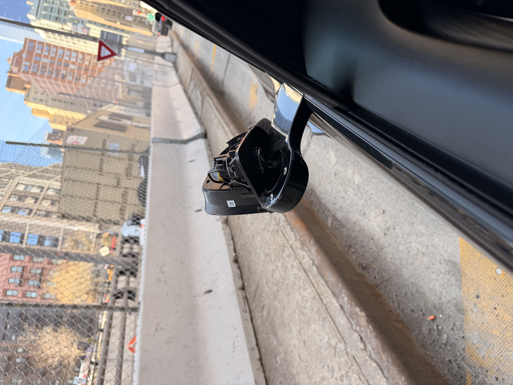

Two independent camera angles positively identify the NJ Transit bus involved.


The left repeater, left B-pillar, and rear clips cover the final seconds of the Tesla's 1-minute dashcam recording ending at 9:52 AM. The front clip is from the first seconds of the next recording, capturing the bus pulling ahead immediately after the collision. All videos play with controls — use slow motion or pause to examine key moments. Click any still image to enlarge it. Use the download buttons to save original files.
This is the most critical angle. The rear-facing left repeater captures the NJ Transit bus approaching from behind, showing the Route 163 LED display and the open luggage bay door protruding from the side of the bus as it passes inches from the Tesla.


This camera faces directly out the driver's side. The bus body fills the entire frame, demonstrating the extreme proximity. The open luggage bay door is clearly visible hanging open on the bus.


The front camera then shows the bus pulling ahead immediately after the collision. Bus #22054 is clearly readable on the rear panel. Note that the bay door is no longer open in this footage — the force of striking the mirror swung it shut. The bus continues ahead without stopping.

The rear camera provides additional context showing the bus passing from behind. The NJ Transit livery and route 163 LED sign are visible as the bus moves through the adjacent lane.

Photograph taken after exiting the Holland Tunnel showing the left side mirror damage.

Left side mirror of the 2026 Tesla Model X, destroyed by the open luggage bay door of NJ Transit Bus #22054. Photo taken after exiting the tunnel.
Preliminary repair estimate prepared by Peotter's Auto Body (Summit, NJ) on March 13, 2026. Point of impact: left side.
{kind=link}
{kind=link}
{kind=link}
{kind=link}
{kind=link}
{kind=link}
{kind=link}
{kind=link}
{kind=link}